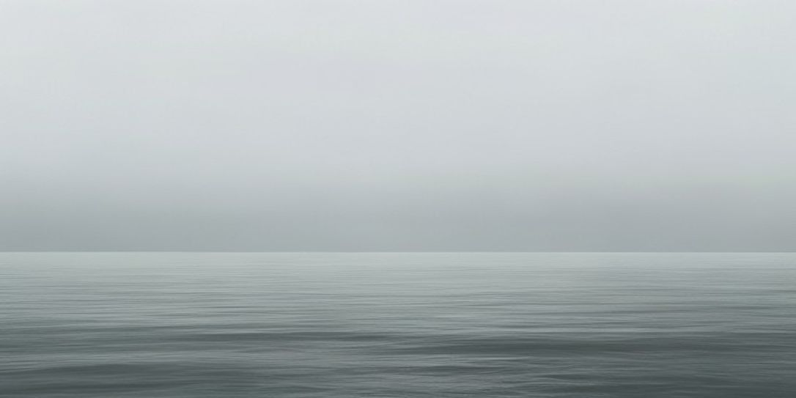

Evidence-based design system
Design that earns its ink.
Colour, charts, type, and layout that read as one body of work — proven over fashionable, every choice inside the accessibility floor.
Every colour pairing is computed for WCAG AA, never eyeballed.
What it is · when to use it
The credible default.
Meridian is design-craft's clean, credible corporate look: an off-white page, one reserved blue, hairline rules, and generous air. It reads solid and professional and then gets out of the way — nothing jumping out to take the credit. Reach for it when the work has to earn trust, not attention.
Its world is clean, credible corporate — the look a company reaches for when the product is serious and the reader's trust is the whole game. The register is self-effacing: calm, refined, quietly competent. A little character is welcome; loud is not. The feeling it leaves is this is solid and professional, with nothing demanding to be noticed.
The vocabulary is small and repeatable: an off-white ground, one reserved blue spent only where there's a decision, hairline rules, mono eyebrows, leading-zero indices, tabular figures wherever numbers align — and a single maritime-whisper hairline (a fine meridian line, one bearing tick) as the one note of character, never the driver.
Deploy it on
- Corporate and product marketing sites
- Dashboards and internal tools
- Reports, docs, and data-heavy pages
- Trust-forward B2B and fintech
- Anything that must read credible, then get out of the way
Wrong choice for
- A consumer brand that needs to shout
- An expressive editorial spread or poster
- A playful, toy-like, or children's product
- Luxury-maximalist or high-fashion identity
- Anything whose whole job is to be memorable-loud
The test — if a design should be noticed, this isn't it; if it should be trusted, it is.
How the style was formed
How the calm was built.
developing-style is design-craft's method for inventing an ownable look instead of a generic one: map the surrounding convention, study an unfamiliar domain and deviate from it, reduce to a small vocabulary, then hold a few constants everywhere. Meridian's style is already locked — so this isn't a new invention; it's the as-built story of how the calm-corporate look was formed, told through the method's four beats.
Register bound: the method usually pushes for pronounced character, but Meridian's brief is explicitly self-effacing. So the signature is deliberately quiet, carried by felt order and held constants rather than a loud device; the one warm pop is its single sanctioned break from the otherwise all-blue field.
Convention mapped
You can't deviate from what you haven't named. The category default is the generic corporate-SaaS landing page: a full-bleed gradient hero, a rounded pill button, a three-up row of drop-shadow feature cards, a stock team photo. On Wölfflin's axes it sits painterly, multiplicity, relative clarity — soft, busy, everything competing for the eye. That's the norm Meridian steps off.
Deviation source — an unfamiliar, adjacent domain
Studying other SaaS sites would only fixate on their moves, so Meridian borrows from a plainer neighbour: the reference document — the field guide, the survey sheet, the broadsheet of record. Their authority is quiet and structural — a fixed measure, numbered sections, hairline rules, figures that align, nothing raised louder than the information itself. The single note of character is a maritime-navigation tell (one fine meridian line and a bearing tick), lifted from that same world of instruments-of-record and kept to a whisper.
Reduced to a small vocabulary
Deviating from the convention leaves a tight, fixed move-set — the whole style reduces to these few things, repeated across every surface. Less, but better.
84.05
A few held constants
Style lives in the minor things kept fixed across everything, not a hero flourish. Meridian holds four: the off-white ground (never pure white), one blue spent only where there's a decision, generous air so nothing shouts, and the maritime whisper kept subordinate — one tell, two spots, never the driver. Strip the decoration and the order still reads — that's where the hand actually is.
How this page is composed
This page is the demonstration.
Composition owns the arrangement — what sits where, at what size, in what relationship — so the whole field reads as one deliberate piece rather than a template. Reach for it to build a layout around a single takeaway, or to diagnose why one feels generic, cluttered, or derivative. Below, the page you are reading is taken apart: seven moves, each a principle doing a job.
Three depth planes
Depth comes from surround and shadow, never from stripes or heavy boxes. You are looking straight at it: this card is a raised panel, set into the recessed well behind it.
One coordinate header
Eyebrow left, leading-zero index right, sharing one baseline. Every section is keyed the same way, so position alone tells you where in the argument you stand.
One mark, spent once
The page keeps exactly one warm accent, aimed at its single highest-value point — the hero reading. Every other section, this one included, holds to blues and neutrals.
the warm mark lives on the hero — deliberately not here| № | On the page | Principle at work | Grounds |
|---|---|---|---|
| 1 | Twelve sections read as four movements; a chapter rule opens each. | Gestalt grouping — kinship binds separate parts into wholes | Wagemans 2012 · plate 10 · Strong |
| 2 | Two numbering tiers: Roman I–IV for movements, leading-zero 00–11 for sections. | Generative vocabulary — one fixed rule derives the whole label system | plate 05 · Strong |
| 3 | Recessed well, paper ground, raised panel — three planes of depth. | Figure-ground — depth engineered by surround & shadow | Wagemans 2012 · plate 02 · Strong |
| 4 | Every section header: eyebrow left, index right, one shared baseline. | The grid — elements disposed in one rational system | Müller-Brockmann · plate 01 · Convention |
| 5 | Air is tight within a movement, wide between them. | Gestalt proximity & active space — spacing alone does the grouping | plates 10 · 08 · Strong |
| 6 | One hairline with a single bearing tick, repeated at each movement. | Meaning from context + index sign — a neutral mark becomes the one system-tell | Peirce · plates 06 · 12 · Strong |
| 7 | One warm mark, spent once, on the hero's terminal reading. | Salience serves the subject — the reserved accent aimed at the single key point | Healey & Enns 2012 · plate 09 · Strong |
Colour & perception
Contrast before hue; encoding before colour.
The evidence lever behind every colour, contrast, palette, and encoding call — settled from controlled studies and one binding standard (Cleveland & McGill, Healey, ColorBrewer, WCAG, the colour-vision literature), not taste. Reach for it whenever you pick a palette, set a ground, decide how to encode a quantity, or need to answer a colour-and-the-eye claim. Its order of operations is fixed: choose the encoding before the colour, and settle contrast and brightness before hue — colour is the last channel we reach for to carry a number.
The palette, by roleoff-white ground · one blue accent family · one reserved warm mark
Grounds — the three planes
Ink & neutrals
The blue accent — the single family
Hairlines
Sequential ramp — for one dense chart; ordered by lightness, dark → light
A continuous map is readable and CVD-safe because its lightness rises monotonically — lightness carries fine detail; hue alone does not (Kovesi 2015). No rainbow: it has no perceived order and hides detail where hue jumps (Borland & Taylor 2007).
Reserved — the one warm popdocumented here as a flat chip; live exactly once
Measured contrastevery pairing computed (WCAG 2.2 · L = 0.2126R+0.7152G+0.0722B, linearized), not eyeballed
| Foreground on ground | Where it is used | Ratio | AA bar | Verdict |
|---|---|---|---|---|
| --ink → --paper | headings & body text | 15.82:1 | 4.5 | PASS |
| --ink-soft → --paper | secondary body copy | 9.71:1 | 4.5 | PASS |
| --muted-2 → --paper | small muted text — the tightest text pair | 4.86:1 | 4.5 | PASS |
| --muted → --paper | eyebrows, captions (large / UI) | 5.56:1 | 3.0 | PASS |
| --blue-ink → --paper | accent text, links | 7.07:1 | 4.5 | PASS |
| --blue-deep → --paper | stat numerals, emphasis | 8.43:1 | 4.5 | PASS |
| #ffffff → --blue | primary-button label (blue on white, inverted) | 6.08:1 | 4.5 | PASS |
| --blue → --paper | ticks, rules, UI marks | 5.87:1 | 3.0 | PASS |
| --blue-deep → --blue-tint | quiet highlight cell (East $5.40M) — blue, not pop | 7.62:1 | 4.5 | PASS |
| --mark-ink → --paper | brand-mark strokes (UI) | 10.02:1 | 3.0 | PASS |
| --pop → --surface | hero specimen dot — graphical object, spent once | 5.12:1 | 3.0 | PASS |
| --b1 → --surface | ramp dark anchor (UI mark) | 8.74:1 | 3.0 | PASS |
| --b3 → --surface | ramp midtone (UI mark) | 3.86:1 | 3.0 | PASS |
Two honest footnotes. The ramp’s light end is deliberate: --b4 (2.26:1) and --b5 (1.49:1) do not clear 3:1 against the ground and are never used as isolated marks on it — inside a stacked-area band they read by lightness order beside the --b1 anchor and direct labels, which SC 1.4.11 permits (adjacent fills need not contrast with each other, only the data with the background). And --pop vs --blue is only 1.19:1 — irrelevant, because the two are never each other’s sole differentiator; the dot is a lone point at a unique labelled position.
Bar: body text 4.5:1 (SC 1.4.3) · large text & UI / graphical objects 3.0:1 (SC 1.4.11).
Under colour-vision deficiencyMachado 2009 simulation, severity 1.0 · up to ~8% of men have CVD
Warm and cool never converge. The pop drifts toward gold or crimson but never toward blue; the blue never warms. A warm-vs-cool pair is the safest cross-CVD contrast there is, because the decisive cue is a dark warm mark on a light ground — a lightness difference, which every deficiency preserves. And the pop earns nothing from hue alone: its meaning rides on position (end of line) plus the numeral 84, so it survives greyscale and every simulation (WCAG 1.4.1 — never colour alone).
Encoding a quantity — colour vs positionsame four readings, two channels
AVOID value by colour shade
Rank A–D by value. You can guess the order, but not the amounts — and A-vs-D is a coin toss. Colour/shading is last of six on the decoding hierarchy and carries no exact readout (Cleveland & McGill 1984; Heer & Bostock 2010).
PREFER value by position
Position on a common scale is decoded most accurately — order and amount are both instant. Lightness rides along as a redundant cue, and the numbers are labelled, so no meaning rests on colour alone.
Typography
Legible first, a voice second.
Typography sets type to be read before it carries a mood: the proven levers — a comfortable size, a generous x-height, sane leading, a measure of roughly 45–75 characters, and a clear hierarchy — do the legibility work, while the face is chosen for tone, since no typeface has been shown to read faster than another. Reach for it whenever you pick faces, set a scale, fix a measure, pair families, load web fonts, or need numerals that align down a column of data.
Faces IBM Plex superfamily
IBM Plex Sans
One family carries the whole page. Hierarchy comes from weight, size and space before a second face is ever spent.
IBM Plex Mono
The functional-contrast face — one fixed width per glyph, so figures align; it also quietly signals “this is data, a label, or code.”
A single superfamily — display, body and data share one skeleton, so they pair without risk. Both cuts are self-hosted (WOFF2, subset) through one stylesheet, with no view-time network fetch.
The scale role-based ramp
A role-based ramp, not a fixed ratio — sizes are chosen per job the way Carbon and Material do, so the scale reads as deliberate rather than arithmetic. Body is the anchor; everything above and below references it. Each rung shows the shipped px value beside its rem equivalent at a 16px root: this specimen ships px to match the shell. Page zoom scales either unit, but only rem also tracks a reader’s own default text size — the reason to reach for it.
Measure & leading ≈ 62 ch · 1.6 line-height
This column is set to about sixty-two characters — inside the forty-five-to-seventy-five band that keeps the eye’s return sweep short without starving comprehension. Leading is 1.6 times the body size: enough for each line to breathe on an off-white ground, and enough to survive a reader who overrides their own spacing for comfort.
Why this width. Short lines aid comprehension; longer lines read as fast, or faster, on screen — so 45–75 characters (Bringhurst’s “66”) is a compromise, not a law. Leading of 1.4–1.6× is the prose convention; WCAG asks the text survive a user setting it to 1.5×.
Numerals tabular vs proportional
Proportional pnum
Even in color inside a sentence — but the decimals and columns wander when stacked.
Tabular tnum
One fixed width per digit — every column and decimal point lines up cleanly.
The rule. Tabular lining figures wherever digits align — tables, axes, KPIs, stat tiles; proportional figures only in running prose. Disambiguated shapes (a marked zero, a narrow 1, an open 3 and 9) cut misreads at a glance. Every number on this page is set tabular.
Charting, the Tufte way
Pick the form the question asks for.
Charting decides which graphical form answers a question — comparison, trend, ranking, part-to-whole, distribution — then draws it so nearly all the ink is data. Reach for it whenever a number should be seen, not just stated. Colour defers to the perception skill; honesty is the floor — honest baselines, direct labels over legends, and position read before length read before area.
Interface & layout
One grid, one spacing step, one clear path.
Interface & layout owns the structure under the page — the grid and spacing rhythm, navigation and wayfinding, the visual hierarchy that decides where the eye lands first, next, and last, and how a table is set to be read down a column. Reach for it to lay out or repair a screen: when a layout feels cluttered or hard to navigate, when the eye has no entry point, or when a table needs to align. It defers chart forms to charting and colour to perception & colour, and holds one floor no score buys out — focus-visible and a ≥44 px target on every interactive element.
Grid & spacing · the system, exposed
Twelve columns inside --maxw 1120px, a --pad gutter each side. The reading column and its rail snap to the same edges — alignment reads as order (processing fluency).
The spacing step
One 4-based step sets every gap and pad. The regularity is the point: close spacing groups the related, a wider gap separates the rest — whitespace is structure, not filler (Gestalt proximity). [CONVENTION]
Navigation · where am I · where to · how back
Breadcrumb answers where am I; the open megamenu, where can I go (grouped and scannable — recognition over recall); the tabs switch views of one object and keep a persistent “you are here.” Primary nav stays visible, never hidden behind a ☰ — hidden nav cut discoverability >20% in NN/g's test. [STRONG] Every menu, tab, and crumb target clears 44 px.
The numbers · a table that aligns
| Region | Q3 revenue | YoY chg | On-time | Margin |
|---|---|---|---|---|
| East | $5.40M | 18.3% | 99.1% | 33.4% |
| North | $4.82M | 12.4% | 98.6% | 31.2% |
| Central | $4.15M | 9.7% | 97.3% | 30.0% |
| South | $3.91M | 6.1% | 96.2% | 28.7% |
| West | $2.88M | 3.2% | 95.4% | 26.1% |
A 5-row read-only table stays a Tufte-styled <table>, not a data grid — accessible for free via <th scope>, no bundle weight or ARIA debt. Tabular figures right-align so a column reads straight down to the decimal. East is the standout, held as a quiet blue emphasis — never the page's reserved warm pop. [STRONG]
Actions & the floor you own
One primary action per view, ghost for the rest — the eye gets a single obvious next step. Below, the two floors this skill guards, shown at work.
Hit target ≥ 44px
Every control clears min-height:44px — design-craft's house floor above WCAG 2.5.8's 24 px minimum. Bigger, closer targets are faster and surer to hit (Fitts's law). [STRONG]
Focus-visible ring
Shown persistently here: a 2px --blue outline at 3px offset — the exact ring the shared rule paints on every :focus-visible element. Keyboard users need it; it never yields. [STRONG · a11y]
Scan path 1 the headline (largest, highest contrast) → 2 the open menu and the table's left identity column (aligned to one edge) → 3 the quiet mono annotations. A stranger reads that order in about three seconds; designed salience proposes the path, the reader's own goal disposes (guided search).
Imagery
Every image earns its place, or it is cut.
Imagery selects and critiques photographs and illustration, decides photo-versus-illustration, directs light tonal treatment, and writes the alt text — and it draws in-house illustration in code. It does not generate photographs. Its one test is whether an image carries the message: a decorative or off-brief picture measurably costs comprehension, so anything that fails the test is cut.
On a self-effacing corporate page most images fail that test, so Meridian leans illustration-first and keeps the set small. Photography is reserved for the concrete and the credible — this exists; illustration carries the abstract, the ownable, and anything a photo would only supply as generic stock.
Every in-house illustration is duotone in one cool key drawn from the blue ramp, so a row of unrelated subjects reads as one system and never competes with the data. Any photograph Meridian does admit is toned toward the blue — desaturated, then a faint cool wash — so it joins the same key instead of importing a second palette. The one photographic ground the page admits is generated, not shot — the sea-horizon under Generative imagery — and imagery desaturates and tones it into this same cool key.
One cool key — a small maritime-civic set drawn in-house, values pulled straight from the blue ramp. Unrelated subjects read as one system; the maritime note stays a whisper, never a theme.
the shared
.photo treatment
The mark
One mark, held to the evidence.
Branding is the identity lever — advisory, not production. It fixes what a mark should be — its concept, personality fit, complexity budget, redesign risk — and polices whether every surface reads as one voice, then hands the actual drawing to imagery. Each call carries a named marketing-science study and a confidence label. Reach for it when designing or judging a visual identity: a logo's shape, descriptiveness, symmetry or complexity, a brand's colour intent and personality, or the risk in a redesign.
The favicon-survival test · same mark, three scales
128 px · the mark
44 px · in nav
16 px · favicon, actual size
| Dimension | How the mark reads | Evidence |
|---|---|---|
| ShapeAbstract, not descriptive | A ring, a meridian, a point — a geometric device, not a picture of what the toolkit sells. For a calm, quietly-known identity that is the fit: the low-investment-familiarity profile wants a less natural, abstract, highly harmonious mark, so it feels known without heavy media spend. | StrongHenderson & Cote 1998 · §A |
| Complexity budgetThree strokes | Low complexity by construction — which is why it holds at 16 px. Complexity is a media-budget multiplier: a spare mark reaches processing fluency on fewer, cheaper exposures than an elaborate one. Not "simple = more memorable" — that is a myth. The claim here is about exposure economics, not an intrinsic memorability law. | StrongJaniszewski & Meyvis 2001 · §F |
| SymmetryBilateral | Left–right symmetric about the meridian line. Symmetry is the default; asymmetry is evidence-backed only for brands whose personality is "exciting". Meridian is competent and calm, so symmetry is the correct, in-register choice. | StrongLuffarelli, Stamatogiannakis & Yang 2019 · §C |
| Single-point focalOne blue point above centre | The lone point is the mark's one deliberate elaboration — moderate, not maximal, which is precisely where accurate recognition peaks. It gives the eye a fixation and a north without tipping the mark into clutter. | StrongHenderson & Cote 1998 · §A |
| Personality readQuiet competence | Navy strokes, blue point, upright and even — the self-effacing register. Blue carries competence and trust; that is the intended read, not excitement — which is also why the mark is symmetrical rather than restless. | StrongLabrecque & Milne 2012 · §G2 · Aaker vocab §H |
One voice. The mark's blue point and the wordmark's blue interpunct are the same hue and the same small gesture, so mark and name read as one utterance rather than two.
One form. The identical ring-meridian-point runs across the header, the footer and the 16 px favicon — no per-surface variants. Committed audiences punish inconsistent identities hardest, so holding a single form is how a young mark earns that commitment (Walsh, Winterich & Mittal 2011 · §E · Strong).
The warm pop is not the mark's. The page spends its one warm accent exactly once, on the hero's key reading — a deliberate exception the mark does not carry. The mark stays navy-and-blue, so nothing competes with that single point and the whole surface still reads as one quiet, credible voice.
Brand absorption
Absorb the brand; don't reinvent it.
The toolkit's one conditional lever — it wakes only to adopt an existing brand: a facelift or reskin that must still read, unmistakably, as them. It reads the brand off its real artifacts (never from memory), extracts the measurable surface signature — colour, type, mark, imagery — and names the "hand" a colour-picker can't see, then binds all of it into one Brand Direction the whole team designs inside. Inventing a new look is developing-style's job; judging how far a committed brand can safely move is branding's.
On standby here. Brand absorption isn't running this page — Meridian's look was invented (developing-style), not adopted. But hand it this same page as a client brand to refresh, and this is the binding Brand Direction it would capture and pass to the team.
Meridian
Binding when active. Overrides design-craft's own defaults — house-style-templates yields; colour, type, layout and composition serve the values below. Deviation is a branding (redesign-risk) call, not a styling one.
- The hand
- Editorial-calm and self-effacing. Wide air between chapters, tighter within — a felt four-movement spine, not a flat stack. Everything rests on hairlines and leading-zero indices; depth is three quiet figure-ground planes (recessed well · paper · raised card), never stripes or heavy boxes. Precise, not decorative — and one warm mark spent on the single most important number, nowhere else. Restraint is the whole point.
- Palette
-
Off-white ground, a single blue accent family, cool neutrals — nothing else loud.
Paper · ground#fbfbf9 · dominant Ink · text#1b2026 Blue · accent#245ec2 · reserved Navy · mark ink#21406e Tint · rare fill#e9f0fbPop · Signal Vermilion #c34121 — the one warm mark, spent once on the hero specimen's terminal reading. reference chip · spent once — hero specimen · not a live accent - Type
- IBM Plex Sans for display + text (600 for headings, tight tracking); IBM Plex Mono for eyebrows, labels, axes and numerals (uppercase, wide tracking). Tabular figures wherever numbers align. One family pair — no third face.
- Mark
- Navy ring · vertical meridian · one blue point above centre, on the paper ground. Reads at favicon size. Never recolour off the navy/blue, restretch, or reset in a system font.
- Structure
- Two-level numbering — Roman movements over arabic leading-zero indices. Coordinate section headers (eyebrow left, index right). Hairline rules throughout. The maritime whisper — one bearing tick + a single degree label — kept to two spots. Three figure-ground planes for depth.
- Voice
- Calm, credible, quietly competent — states the fact, skips the sell.
"Design that earns its ink." · "proven over fashionable" · "computed for WCAG AA, never eyeballed." · "The floor is not negotiable." - Imagery
- Two treatments, one cool key. Illustration is duotone — colour lives inside the plate as the single blue. Photography is desaturated to grayscale, then a cool blue wash is laid over the top (grayscale-toward-blue), so a page of unrelated photos still reads as one cool set. Made to fit, never slick stock.
Must survive · the non-negotiables
- Off-white paper stays the dominant ground — never a white or dark field.
- Blue is the only accent family — no second brand colour.
- The warm pop stays spent exactly once, on the single key point.
- Hairlines · leading-zero indices · felt movements — the structural hand.
- The meridian whisper stays a whisper (≤ 2 spots) — never a nautical costume.
- The calm, self-effacing voice — nothing raised, nothing sold.
30-second fit test paper ground dominant? blue the only accent? pop spent once? hairlines and leading-zero indices intact? voice calm? One "no" means it's drifting toward house style, not Meridian.
Generative imagery
When a generated image earns its one place.
Generative imagery is the toolkit's only way to make a raster it can neither select nor draw by hand — a keyless generation service, reached for an atmospheric ground, a texture, or a mood asset when nothing good can be selected. It fails at in-image text, logos, real people, and charts, so those stay composited or commissioned. And it is governed hard: a design must never depend on it, its use stays minimal, and a generated image may only ever support the work, never be its concept.
Meridian's restraint once answered this with nothing — zero generated assets. The honest answer is narrower: generation is spent sparingly, and on this page it earns exactly one supporting ground — the misty sea-horizon below, generated to the team's fit-requirements, then toned into the single cool key.
It carries register, not argument. Remove it and the section still stands — which is precisely why it is allowed to stay. What follows is the collaboration made visible: how a raw frame becomes a placed, in-key atmosphere, and the gates it had to clear to ship at all.
The pipeline · raw → treated → placed

Imagery directs the brief and holds the accept / reject bar the generator returns a raw frame imagery grades it to the one cool key the art-director approves it, or it does not ship.
Non-text content · WCAG 1.1.1 — the floor this section owns
Written for the point it makes — quiet maritime atmosphere joined to the single cool
system — not "image of the sea." The raw panel carries its own alt; the pipeline arrows above are
aria-hidden. Both images ship a text alternative — the same 1.1.1 floor the imagery section owns.
Governance gates · annotating the one shipped asset
Availability
Reachability was probed at build on 2026-07-04 and returned HTTP 200 — a point-in-time check, not a standing guarantee. The page ships the result, so it never depends on the service at view time.
Built from fit-requirements
Generated from the team's precise fit-requirements — off-white register, the one cool blue key, flat head-on ~2:1 framing, a low misty-horizon atmosphere with no object, no mark or text in-image — never a naked prompt.
AssembledLocal-first · minimal use
This is the one generated raster on the page; every other mark — the duotone plates, the paper-grain ground, the charts — is local SVG. Generation is spent once, only where selection and code could not supply a real misty photograph.
Single assetSupporting, never the concept
It sits as a faint atmospheric ground, graded pale into the cool key; the concept stays the pipeline and the craft around it. It carries register, not argument — remove it and the section still stands.
Supporting groundDirector approval
It ships only because the art-director judged it on-register against the accept / reject bar. Had no raw cleared the bar, the honest move stayed open: no cheap graphic — no graphic beats a cheap one.
ApprovedfeTurbulence — in-palette, dependency-free, controllable to the exact cool
neutral — and every plate, grain, and chart is the same local SVG. The generated sea-horizon above is the
one deliberate exception, admitted only because lit atmosphere is the rare thing a flat drawing cannot
fake. Where code already delivers the material, Meridian draws it rather than fetches it.House templates
A house look, on the record.
house-style-templates is the reference shelf of design-craft's own directional looks — cohesive templates the art-director and builder pull from, and that anyone can reuse as a starting point. It's the plugin's one openly-subjective, most-overridable layer (declared taste, subordinate to the four floors and every evidence skill). The shelf is built: five directional templates — Meridian, Ledger, Terminal, Deepfield, Prism — each a baseline a real design is expected to diverge from as the brief demands. What follows is Meridian's card.
Meridian
Registered · library of fiveClean, credible corporate — light off-white ground, one reserved blue, self-effacing register.
Reach for Meridian when the work must read credible and get out of the way — corporate and product sites, dashboards, reports, docs, trust-forward B2B — and the brief wants solid and professional, with nothing jumping out.
Status. The house library is built — Meridian is one of five registered directional cards, beside Ledger, Terminal, Deepfield and Prism. A template is a baseline, never a cage: the design is expected to diverge wherever the user's needs demand. Reference-only, no dedicated agent, and the most overridable layer in the plugin: it adds a look, it never breaks a floor.